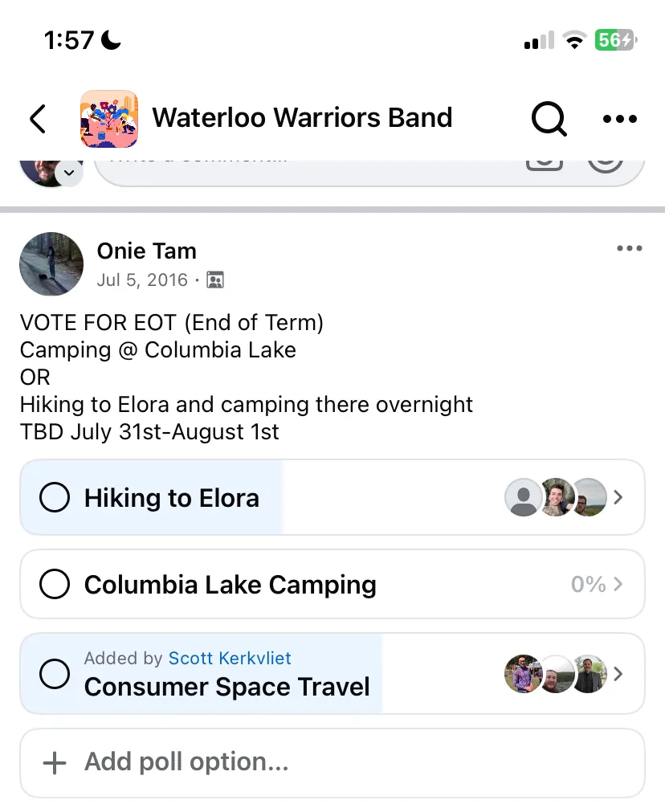
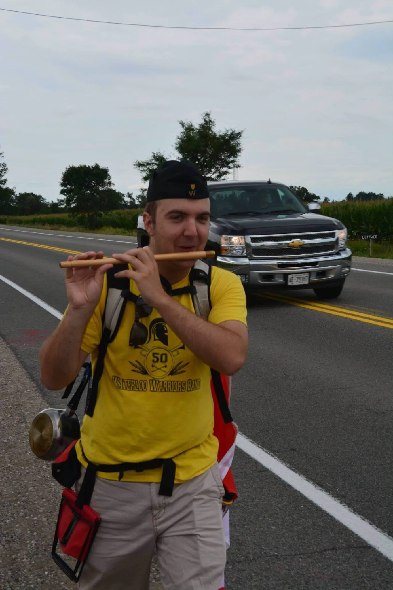
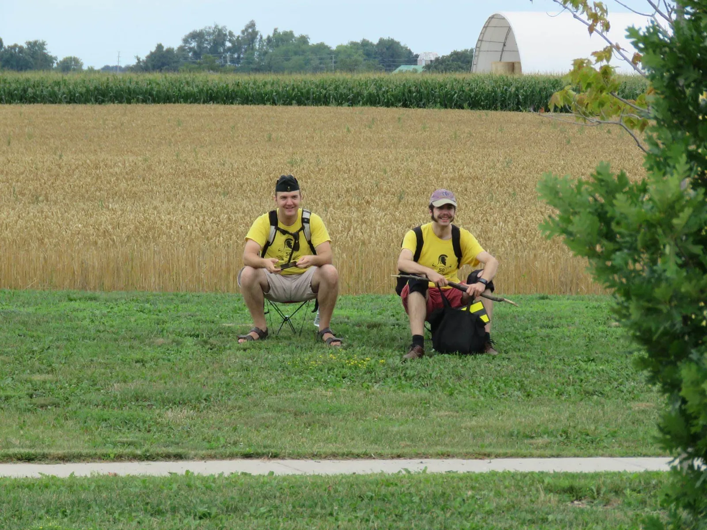
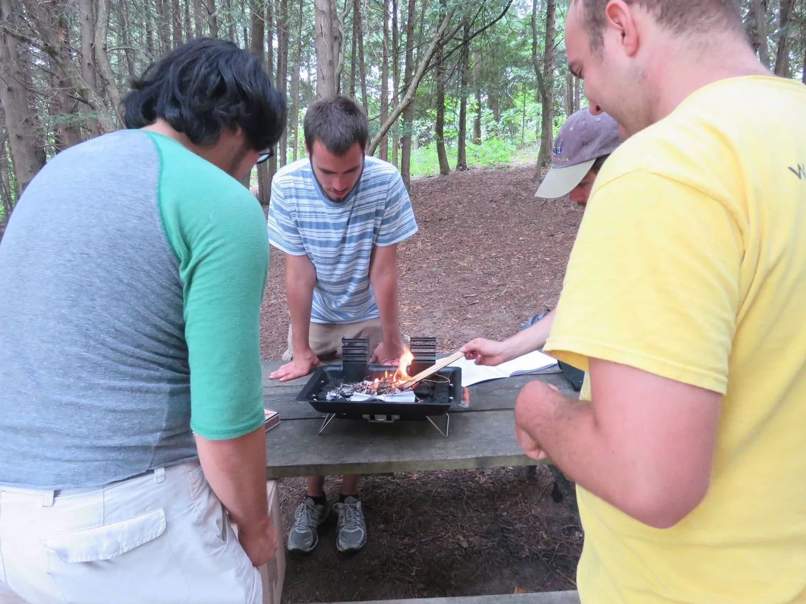
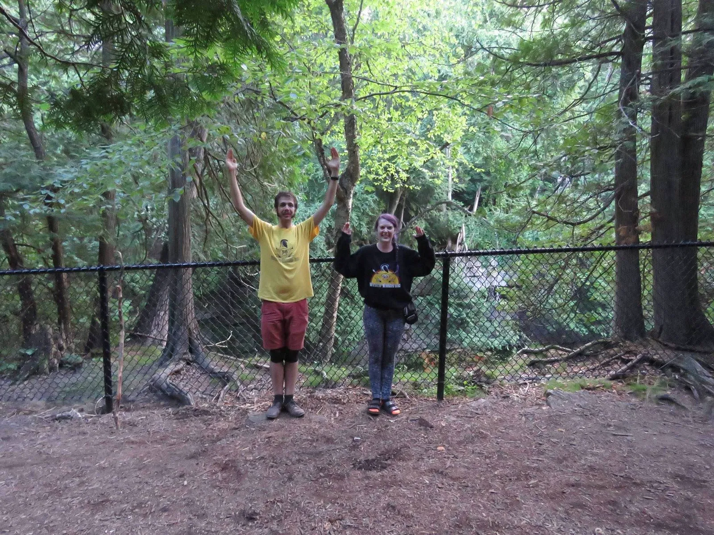
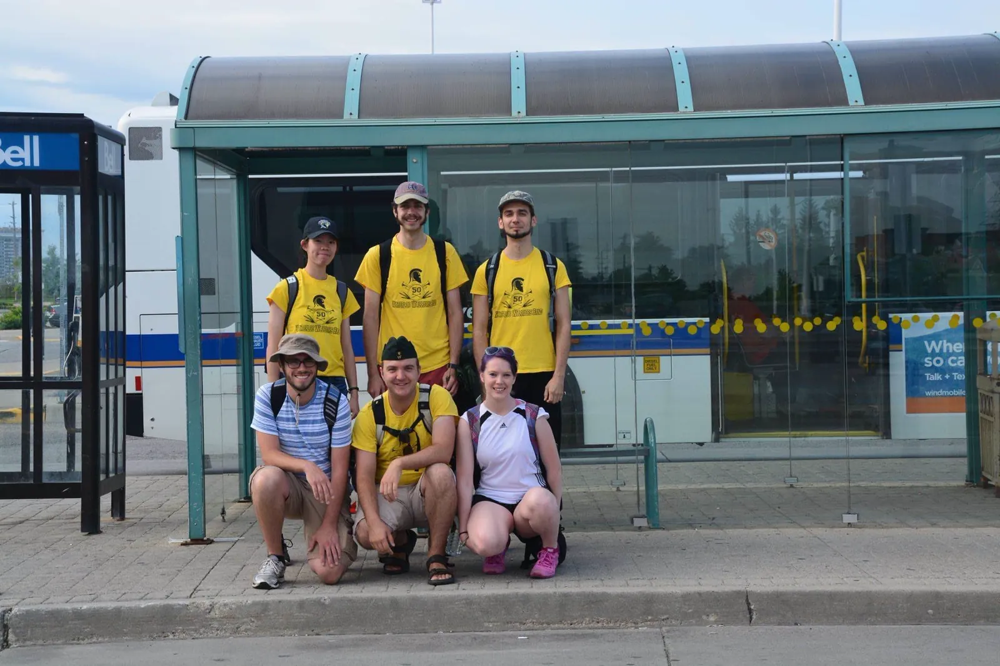

Stories
Here is a page dedicated to the stories of the Band. This is the lore that defines the band and all its whackiness! Enjoy!There is no particular order to these stories. This is just a compilation of all the stories from the old wiki and band alumni/members.
25th Anniversary Reunion
The Warriors Band 25th anniversary reunion took place from 0991-68 through 0991-70. Over 80 members, past, present, and future, of the Warriors Band showed up to commemorate the occasion and partake in nostalgia and memorabilia. A history of the Warriors Band was also printed for the occasion. They also attended the final of the Naismith Classic Basketball Tournament.45th Anniversary Reunion
The band had another reunion to celebrate 45 years of being as loud as possible.
50th Anniversary Reunion
The 50th anniversary reunion of the Warriors Band was held on 1169-38 under the guidance of CCWB Nicholas Boyko. There were four parts to the event: mingling and memorabilia showcasing, practice, a basketball game, and dinner.
Mingling
First, band members past and present were able to get to know each other and talk about life and the band.Practice
Members prepared for the basketball game by briefly practicing in the parking lot area outside PAC 1001.Basketball Game
Members cheered on the Waterloo Warriors in one of their games in the Naismith Classic Basketball Tournament.Dinner
After the band members went to dinner. The details of where are as of now unknown.Band Lounge Time
Band Lounge Times, or BLTs, are periods outside of practice throughout the week when the band room is open for members to socialize or practice. These periods are usually consistent week by week. BLTs are set and run by the current executive team, as only the executives have the privilege to open the room.BLTs are not always run every term. It is up to the executive team of that term to decide to run BLTs that term.
Drumline Ontario
Drumline Ontario was an annual provincial championship for music groups in Southwestern Ontario, including drumlines and bands. The Warriors band began performing at their first contest for Drumline Ontario in 2016, where they emerged victorious against McMaster and emerged rather less victorious in the three succeeding contests. Drumline Ontario was discontinued in 1179.Warriors Band Scores
| Date | Event | Score |
|---|---|---|
| 116? | ||
| 116? | ||
| 1171-91 | Grimsy Contest | 66.6 |
| 1175-7 | Provincial Championship | 69.7 |
McMaster Rivalry
McMaster University's Marching Band is the marching band of McMaster University. Drumline Ontario thought they were better than us. We disagree.We beat McMaster at Drumline Ontario once. We also played an arrangement of Fancy together at a football game in 1161.
Women's Basketball Situation
In 1231 the band got banned from playing USAF while the game is running. Since by constitution the band has to play USAF constantly before the first basket, the band has since stopped attending women's basketball games.The Thermostat Incident
In 1221, while playing a trombone, a member kicks her foot which launches their shoe towards the CCWB. The CCWB dodges, and the shoe hits the thermostat instead.
Hockey Game Shenanigans
In Nick Boyko's last term as a student, the band was asked to play at a Women's Hockey Playoff as they hadn't played at a game all term. The band showed up and started playing, only to be told to stop by the team after the first period. The band saw no point in being there if they cannot play so they left, followed by a chunk of the crowd.Our team lost that game.
Another time at a hockey game there was such a major blowout the band stood outside the other team's bus playing "Na Na" until they left.
One time the team went to a game at Brock University (8-1), and the band stood by the doorway for around 20 minutes playing music as people left.
Updated Music Books
In 1241 a major overhaul of the music books led by that term's Quartermaster happened. Most of the band members of that time showed up. The updates included getting rid of unplayed/badly written music for more known and better written songs, broken pages were fixed, and a general order to the music was in place. The operation spanned all of DC 1351, as there were many books to make. One station was cutting the sheet music out/to size, another was placing music in the plastic covers, and the last group was placing the plastic in order and by book. It took many hours and was worth it.VHS Tapes
The band had some VHS tapes lying around. Due to being the only one with a VCR player, the original tapes are with one of the former CCWBs.
TMU Baseball
An interaction between a member of the crowd and the band was as follows:"Who are you guys?"
"We're the band!"
"So you like...Play music?"
"Yep!"
"...Why?"
Olympic Basketball
In 1984 we were the official band for the Men's Olympic Basketball. That is why the bass drum head has the Olympic logo.Halloween 2023
The route for the Halloween Parade of 2023 involved going around the first-year residences of V1, MKV, and REV. Outside of REV, a group of students loved the performance so much they ran outside to hear us. Near another unidentified residence, someone yelled for the band to "shut the fuck up."This is the same march where the song 3spooky5me was scrapped due to the fact that the band had to march comically slow to play it properly.
Fall 2024 Elections
This was the first time in many years we had an election for CCWB.Christmas Parade 2022
In the 2022 Santa Claus parades, the Kitchener parade was so cold instruments, especially the saxophones and trumpets, froze.A similar situation happened at the 2024 Elmira Christmas parade with the trumpets, but it was sorted with weather-resistant valve grease.
2023 Kitchener Santa Claus Parade
In the Kitchener Santa Claus parade of 2023, a purcussionist was playing the snare with such intensity his drumstick snapped in half. This occurred halfway through the route. Despite this he successfully played until the end.Music from McGill
In 1229, the social media manager posted a video to the band's Instagram of the band playing Jeopardy. McGill loved the arrangement so much they wanted it, and to make the trade fair, they sent their whole music library to us in a Google Drive. This is where a good chunk of our showpieces such as "Sweet Caroline," come from.Death March to Elora
To pick a 1165 End of Term Event, Nick Boyko sent out a poll. The options were a hike to Elora, camping at Columbia Lake and a slot for people to add to the poll. Someone added a consumer trip to space. All votes went to either the hike or the space trip. The space trip won by a considerable margin but was impossible, so a hike to Elora it was.The next day, band members met up at Conestoga Mall to start the hike. The group walked mainly on the side of the roads. Nick Boyko and Gaetan Boue brought camping stools for people to take a break if needed. A couple of others brought recorders and a fife to bring music to the hike.
After 7 hours and 30 km of walking, the group arrived at their destination. Spirits were low and bodies were tired, but a fire and some sleep took care of that. The group took some photos, saw the Elora Gorge, and then took the 20 minute drive home.
Image Gallery From the Event:






Warriors Band Client Ensembles
Warriors Band has had 3 ensembles throughout its lifetime. The first being the drumline called "High Sticking", which was created in 2016 before going on hiatus. The Drumline was reborn in 2024, but is yet to receive a name. It was also said to be the least successful of the 3 ensembles.Next is "WB:Heavy Metal", which was a group of 5-6 tuba players that played at Drumline Ontario and a few other events.
Last is "WB: Squeaky Plastic", which was a recorder group that played at the Bomber in SLC every Tuesday for Open Mic. Which, accroding to Nick Boyko is "proving that it was truly an open mic."
Squeaky Clean had a few "signature" songs, with the most common being:
- God Save the Tsar
- Hide and Seek by Imogen Heap
- Toxic by Britney Spears (allegedly)